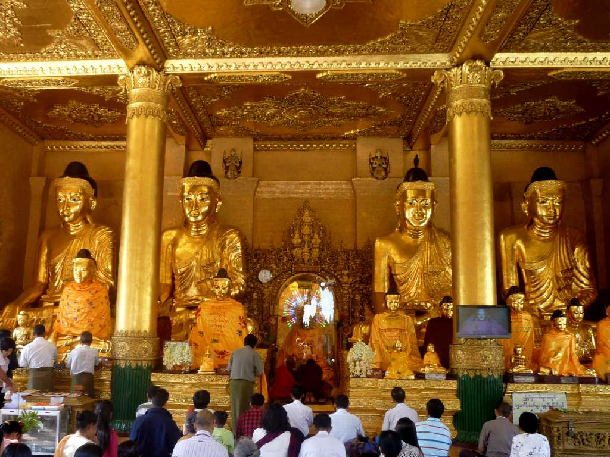
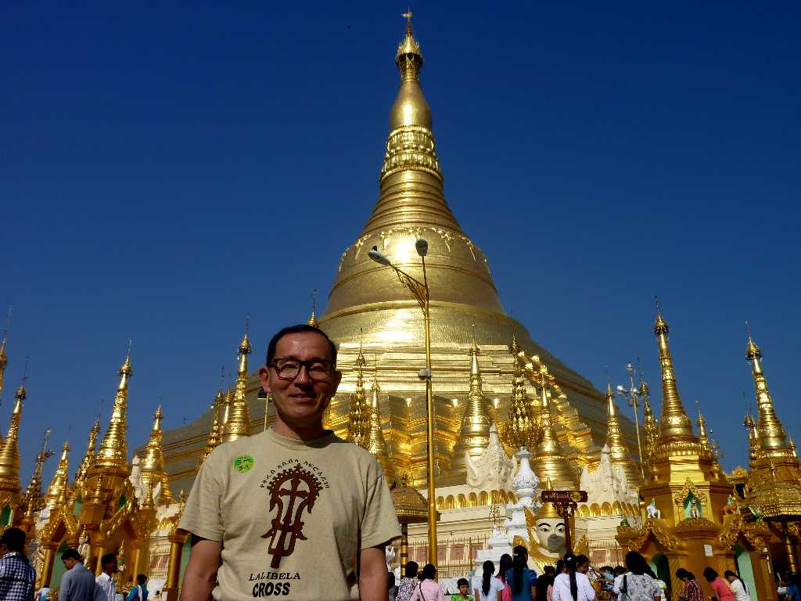
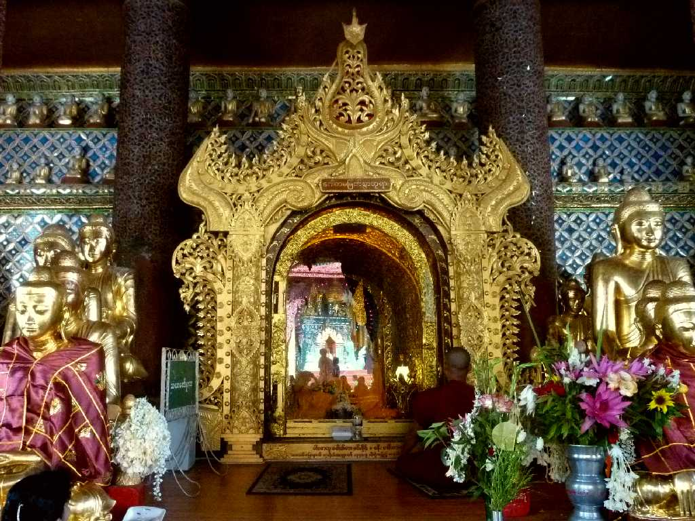
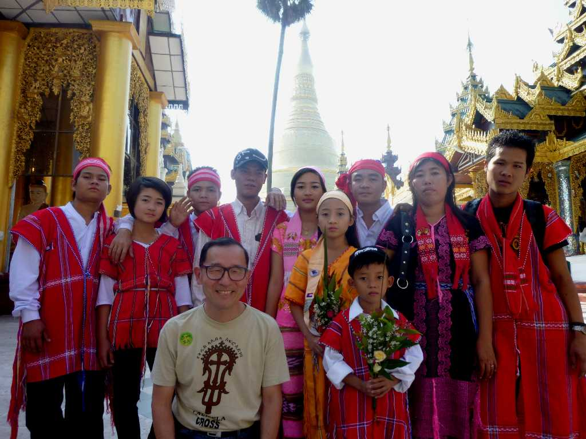

Shwedagon Pagoda Yangon
ヤンゴンの小高い丘の上にあるミャンマーの顔シュウエダゴンパゴダ 伝説によれば２５００年前に兄弟が仏陀から貰い受けた８本の聖髪を奉納し創られたようだが考古学的には６世紀頃に遡る

January 5 2011 Shwedagon Pagoda
シュウエ(金)ダゴン(ヤンゴンの古い名)は高さ１００ｍあり頂上の風見鶏には７６カラットのダイヤがはめ込まれておりダイヤ５千個ルビー千個金板８千枚は寄進による

Shwedagon Pagoda

January 5 2011
巡礼に来たミャンマー少数民族の人々